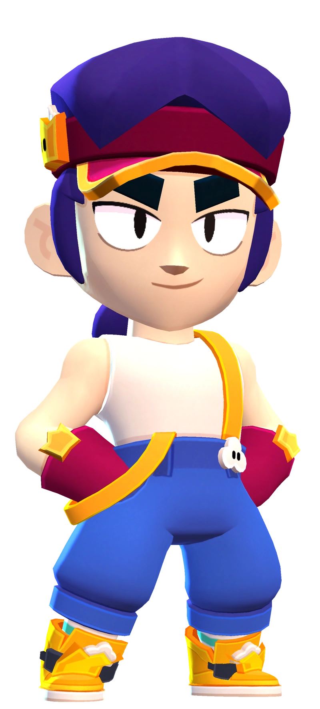
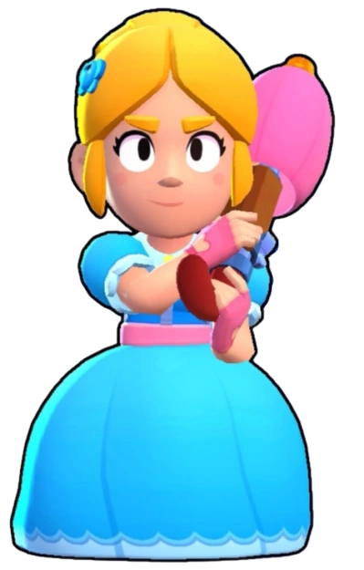

Навигация на другую страницу
Навигация по стронице
Brawl Stars
Цель игрока — продвигаться по трофейной дороге, участвовать в боях с другими игроками, а также получать и улучшать новых игровых персонажей с уникальными способностями и характеристиками. Геймплей сосредоточен на том, чтобы в одиночку, командой из двоих или в кооперативе из троих или пяти человек победить команду других игроков, или противника под руководством ИИ, в разнообразных игровых режимах. Игроки могут выбрать персонажей, каждый из которых имеет свои навыки и суперспособность. Персонажей можно получать на пути «Дорога Старр» за кредиты, а гаджеты, звёздные силы, снаряжение, гиперзаряды — купив за монеты, кристаллы, настоящие деньги или получив из призов Старр. В майском обновлении игры 2020 года была добавлена новая система продвижения — Brawl Pass. При участии игроков в сражениях или обновлении режимов, они зарабатывают боевой опыт, используемый для разблокировки уровней наград. Игроки могут получать кредиты, кристаллы, скины, значки (эмодзи, которые можно использовать во время баталий или в комнате командной игры), монеты, очки силы, призы Старр, спреи (специальные рисунки, которые можно оставлять на земле в бою) и бойцов. Существует три типа Brawl Pass: бесплатный и платный, а также Brawl Pass Plus, обе платные версии приобретаются за настоящие деньги[3][4]. Brawl Pass Plus стоит дороже стандартной платной версии и включает больше наград, таких как кристаллы, монеты, очки силы, блинги, титул и цветовые вариации скина Brawl Pass. Некоторые игроки в режиме одиночного столкновения объединяются, чтобы совместно уничтожить остальных и повысить свои шансы на победу. Несмотря на отсутствие чата в боях, они разработали способ невербального общения. Завидев потенциального союзника, игрок предлагает сотрудничество, вращая своего бойца. Однако нередко после установления доверия один из игроков предаёт другого и убивает его. Подобная тактика наблюдается и в Fortnite, а также в PUBG: Battlegrounds, что может свидетельствовать о её эффективности. Компания Supercell неоднократно заявляла, что эта стратегия противоречит задумке игры и раздражает других игроков. Хотя разработчики предпринимали попытки искоренить такую тактику, полностью избавиться от неё не удалось[5]. В декабре 2022 в обновлении были удалены все виды ящиков и появился новый способ получения бойцов — продвижение по «Дороге Старр». Для продвижения по ней игрок должен собирать новую валюту — кредиты. После сбора определённого количества кредитов (в зависимости от редкости бойца) игрок получает его. До декабря 2023 существовали хромакредиты, с помощью которых можно было разблокировать бойцов хроматической редкости. После этого, все хроматические бойцы были переквалифированы в другие редкости, а сама редкость была удалена. В июне 2023 года в игру была добавлена новая система получения наград и призов — «Призы Старр», которые стали заменой ящикам[6].
Режимы игры
Сражайтесь против других в одиночку или с союзником, стараясь продержаться до последнего! Интересный факт! В одиночном столкновении иногда можно увидеть игроков, вращающихся на месте. Это может означать, что они хотят с вами скооперироваться. Правил, запрещающих подобное сотрудничество, нет, но учтите, что этот игрок может предать вас в любую секунду. Помните, что победитель может быть только один.Бой 3 на 3, в котором нужно собрать 10 кристаллов и удержать их, пока не выйдет время. По истечении времени побеждает команда с наибольшим количеством кристаллов. Собирайте кристаллы, появляющиеся в центре карты, а также те, что теряют побежденные противники! 5 на 5 Некоторые события позволяют играть в захват кристаллов в крупномасштабном режиме 5 на 5. Теперь на карте ДВА рудника с кристаллами. Побеждает команда, которая первой соберет и удержит 20 кристаллов! 3 на 3 Чтобы заработать очко, нужно забить мяч в ворота противника! Побеждает команда, первой забившая 2 гола. С началом дополнительного времени все неразрушимые стены... разрушатся. Не дайте противнику пробить вашу оборону! 5 на 5 Некоторые события позволяют играть в броулбол в крупномасштабном режиме 5 на 5. При этом на поле происходит неожиданный поворот — на целых 90 градусов! Да-да, в режиме «Броулбол 5 на 5» игра ведется на поле в ландшафтном режиме, и ворота тоже становятся немного шире!Одолейте команду противника, первыми победив в двух раундах! Павшие бойцы выбывают из игры до следующего раунда. Если сражение затягивается, карту начинают закрывать ядовитые облака! 3 на 3 Набирайте очки, побеждая противников в матче 3 на 3. Выигрывает команда, первой набравшая 10 очков. 5 на 5 Некоторые события позволяют играть в зачистку в крупномасштабном режиме 5 на 5. Победите соперников в этой мега-битве 5 на 5 и наберите 20 очков для победы!Это битва за мяч 3 на 3! Сражайтесь за владение баскетбольным мячом и старайтесь забросить его во вражескую корзину. Любой заброшенный из-за линии мяч приносит 3 очка. Любой заброшенный за линией мяч приносит 2 очка. Матч заканчивается, когда одна из команд набирает 5 очков или когда время истекает. В этом напряженном режиме 1 на 1 каждый из участников играет тремя бойцами. После каждого раунда победитель сохраняет бойца для игры в следующем раунде, а проигравший — теряет. Продолжайте сражаться, пока у одного из участников не кончатся бойцы! Схватка 3 на 3, где победа над врагами приносит звезды! Будьте осторожны — чем больше противников вы победите, тем больше звезд заработаете и тем выше будет награда за вашу голову! Побеждает команда, первой набравшая 20 звезд. Если бой закончится вничью, то его исход решит центральная звезда. Следите за тем, чтобы она не попала в руки врага!Бой 3 на 3, для победы в котором нужно захватить одну или несколько зон быстрее, чем вражеская команда! Бой 3 на 3, в котором вам нужно первыми уничтожить сейф вражеской команды. Бой 3 на 3, в котором ваша команда должна подобрать шар с краской и покрасить карту в свой цвет. На месте побежденных противников остаются большие пятна краски. Побеждает команда, которая покрасила достаточную для достижения 100 % прогресса площадь карты.

Враги
- Босс
- Роботы
- Прочие игроки
Бравлеры
| Человек | Ниндзя |
| Редкость | Мифический | Имя | Фэнг |
| Описание | «Фэнг смотрел так много фильмов про кунг-фу, что ведёт себя как герой одного из них.
Он никогда не распускает руки... если вопрос можно решить ногами.» |
Титул | «Мастер пинка» |  |
| Человек | Повар |
| Редкость | Эпический | Имя | Пайпер |
| Описание | «
Пайпер мечтает открыть пекарню и торговать пирожными, печеньем и другими сладостями. Только не стоит спрашивать её о прошлом, иначе можно очутиться в духовке.» |
Титул | «Снайпер» |  |